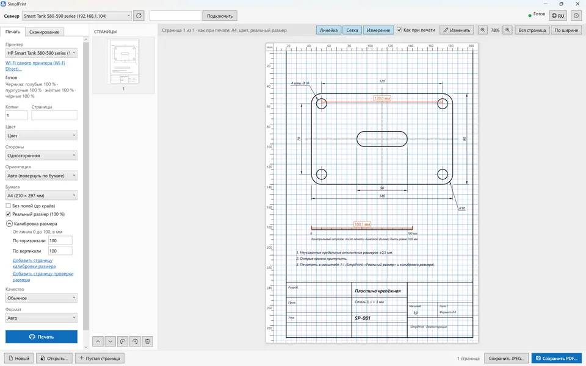

Реальный размер (100 %)
Страница печатается в настоящем размере по центру листа, без уменьшения «под поля». Что попадает на поля, видно в предпросмотре.
Масштаб 1:1SimplPrint — простая инженерная печать. Чертежи, шаблоны, выкройки и трафареты печатаются в масштабе 1:1: линейка, сетка и измерения поверх предпросмотра показывают, где на бумаге окажется каждая линия, а калибровка исправляет погрешность вашего принтера.

Чтобы страница поместилась в поля принтера, Windows и программы её уменьшают. Добавьте погрешность самого принтера — и деталь, вырезанная по шаблону, уже не подходит.
Страница A4 при обычной печати «по размеру листа» уменьшается до границ полей.
Типичная погрешность самого принтера по горизонтали и вертикали — у каждого направления своя.
Столько можно потерять на длине 200 мм, если сложить уменьшение и погрешность принтера.
Это упрощённая копия предпросмотра SimplPrint. Протяните мышью или пальцем между двумя точками — появится расстояние в миллиметрах на бумаге. Переключите режим и посмотрите, во что превращается контрольный отрезок 100 мм при обычной печати.
Щелчок без перетаскивания убирает измерения — как в программе.
SimplPrint печатает страницу с сеткой 10 мм. Вы измеряете её обычной линейкой и вводите два числа — по горизонтали и по вертикали. После этого каждая страница увеличивается или уменьшается ровно настолько, насколько ошибается принтер.
Шаги: напечатать сетку → измерить линейкой → ввести в SimplPrint.
Того, что ниже, мы не встречали в обычных программах печати: здесь размеры можно увидеть, проверить и поправить ещё до того, как бумага выйдет из принтера.
Страница печатается в настоящем размере по центру листа, без уменьшения «под поля». Что попадает на поля, видно в предпросмотре.
Масштаб 1:1Исправляет погрешность принтера отдельно по горизонтали и вертикали. Измерили один раз — и дальше 100 мм на странице это 100 мм на бумаге.
Редко встречаетсяМиллиметровая линейка и сетка поверх предпросмотра, измерение расстояния между любыми точками. На листе их нет — если не захотите напечатать.
В предпросмотре и редактореПринтеры увеличивают страницу без полей и срезают края. Калибровочная страница покажет, сколько срезается, и печать совпадёт с предпросмотром.
A4, A5, фото и другиеНастоящие снимки SimplPrint с чертежом A4. Щёлкните по картинке, чтобы увеличить.
Включите «Линейку», «Сетку» и «Измерение» над предпросмотром. Режим «Как при печати» показывает миллиметры на бумаге: с полями принтера, уменьшением по размеру и калибровкой. Здесь расстояние между отверстиями — ровно 120,0 мм, контрольный отрезок — 100,1 мм.

«Добавить страницу калибровки размера» кладёт в документ сетку 10 мм и сразу настраивает печать. Измерьте её от линии 0 до 100 и введите результат — здесь принтер печатал 99,2 мм по горизонтали и 100,6 мм по вертикали.

Пронумерованные линии у каждого края показывают, сколько срезает принтер. Введите номера первых напечатанных линий — и печать без полей совпадёт с предпросмотром до миллиметра.

Пометки, стрелки, фигуры, текст, кисть и ластик, картинки из файла или буфера обмена. Линейку, сетку и измерения можно вписать в страницу и напечатать.

Со стекла и из автоподатчика, двусторонние документы — с ручным переворотом. Сетевые сканеры работают по eSCL (AirScan, Mopria), USB-сканеры — через WIA. Сохранение в PDF и JPEG.

Нет роутера рядом? SimplPrint подключится к сети принтера DIRECT-…, найдёт принтер и сканер, а потом одной кнопкой вернёт компьютер в домашнюю сеть.
Без программ производителя и без поиска драйверов — для сетевых устройств ничего устанавливать не нужно.
Печать по IPP (IPP Everywhere, AirPrint, Mopria) и сканирование по eSCL. Принтер и сканер находятся сами — даже если это разные устройства.
Принтеры и сканеры, установленные в Windows, — по кабелю или со своим драйвером. Задание отслеживается в очереди Windows.
Подключение к собственной сети принтера DIRECT-… без роутера и возврат в домашнюю сеть одной кнопкой.
Принтер доступен напрямую через Wi-Fi или Ethernet, в обход маршрутов VPN. Если VPN блокирует сеть, программа подскажет, что исключить.
Страницы отправляются в формате Apple raster тем принтерам, которые принимают только его.
Без телеметрии и учётных записей. Документы не покидают компьютер — только отправляются на ваш принтер.
Сравнение с тем, что обычно умеют стандартная печать Windows, просмотрщики PDF и программы производителей принтеров.
| Возможность | SimplPrint | Печать Windows и просмотрщики PDF | Программы производителей |
|---|---|---|---|
| Печать в реальном размере, без уменьшения | ✓ | часто есть («Фактический размер») | зависит от программы |
| Калибровка масштаба принтера по линейке | ✓ | — | — |
| Линейка, сетка и измерения поверх предпросмотра | ✓ | — | — |
| Предпросмотр «как при печати» с полями принтера | ✓ | приблизительно | приблизительно |
| Калибровка печати без полей | ✓ | — | — |
| Сетевая печать и сканирование без драйверов | ✓ | нужен драйвер | своя программа и драйвер |
| Работа при включённом VPN | ✓ | часто не видит принтер | часто не видит принтер |
| Без установки, учётной записи и телеметрии | ✓ | ✓ | часто нужна учётная запись |
Сравнение с типичными возможностями этих категорий программ; у отдельных программ могут быть свои функции.
SimplPrint сейчас в открытой бете. Особенно нужны отзывы о том, что трудно проверить без вашего оборудования:
Пишите, какой у вас принтер и Windows. Журнал программы — в %LOCALAPPDATA%\PrinterDesk\logs.
Один файл SimplPrint.exe, 70 МБ. Ничего устанавливать не нужно — ни программу, ни .NET.
Если Windows SmartScreen предупредит, нажмите «Подробнее» → «Выполнить в любом случае»: файл пока без цифровой подписи.
Принтер найдётся сам. Отметьте «Реальный размер», один раз сделайте калибровку размера — и печатайте в масштабе 1:1.
Да. Программа бесплатная, без рекламы внутри, без учётной записи и без телеметрии. Код распространяется по лицензии MIT.
Обычная печать уменьшает страницу, чтобы она поместилась внутри полей принтера (лист A4 выходит примерно на 97 %), а сам принтер добавляет погрешность около 1 %. В SimplPrint есть печать в реальном размере и калибровка размера, которая исправляет погрешность принтера.
На вкладке «Печать» откройте «Калибровка размера», нажмите «Добавить страницу калибровки размера» и напечатайте её. Измерьте сетку линейкой от линии 0 до 100 по горизонтали и по вертикали и введите два числа. Проверочная страница покажет результат.
Для сетевых принтеров и МФУ — нет: SimplPrint печатает по IPP (IPP Everywhere, AirPrint, Mopria) и сканирует по eSCL. Принтеры и сканеры, подключённые по USB, работают через установленный в Windows драйвер.
Большинство сетевых принтеров и МФУ последних лет (IPP Everywhere, AirPrint, Mopria), любые принтеры, установленные в Windows (USB или с драйвером), а также подключение к собственной сети Wi-Fi принтера (Wi-Fi Direct).
Файл пока не подписан цифровой подписью, поэтому SmartScreen показывает предупреждение. Нажмите «Подробнее», затем «Выполнить в любом случае».
Да, с большинством VPN: программа обращается к принтеру напрямую через Wi-Fi или Ethernet. Если VPN блокирует локальную сеть (kill switch), SimplPrint назовёт подсеть, которую нужно исключить в настройках VPN.
Бета-версия 0.6.0 для Windows 10 и 11 (64-бит). Один файл, без установки. Настройки и несохранённые страницы сохраняются между запусками.
Скачать SimplPrint.exe70 МБ · бесплатно